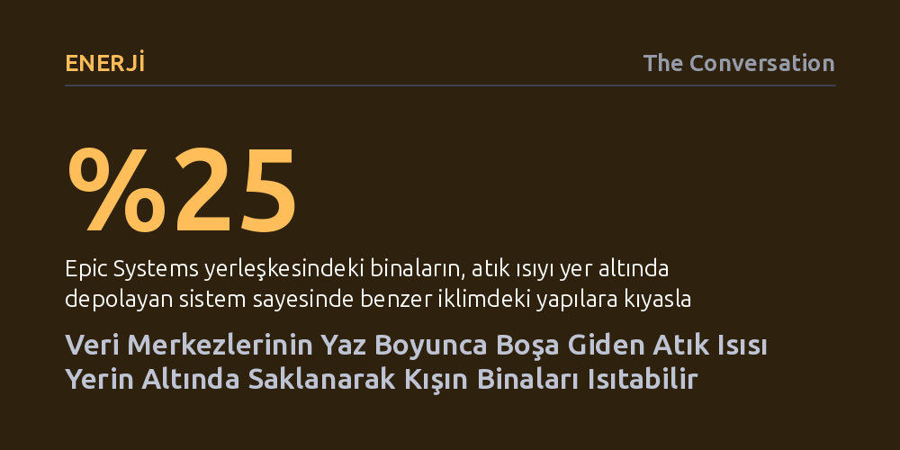

ENERJI · The Conversation · 2026-10-10
Veri merkezlerinin yaz boyunca havaya savurduğu devasa atık ısı, kayaların zayıf iletkenliği sayesinde aylarca yer altında depolanıp kışın binaları ısıtmak için geri kazanılabiliyor. Bu yöntem, sunucuların soğutma kaynaklı su ve elektrik tüketimini düşürürken tesislerin kışlık enerji ihtiyacını karşılıyor.
Veri merkezlerinin çevreye yük olarak görülen devasa atık ısısının ve soğutma maliyetinin, yer altı termal depolamayla kış aylarında temiz bir ısınma kaynağına dönüştürülebileceğini gösteriyor.

Günümüz dijital dünyasını ayakta tutan veri merkezleri, yılın her saati kesintisiz ısı üretiyor. Ancak bu devasa ısı enerjisinin yeniden değerlendirilmesi önündeki en büyük engel teknolojik yetersizlikten ziyade zamanlama uyumsuzluğudur. Ilıman iklimlerde binaların ısınmaya ihtiyaç duyduğu süre yılda yalnızca üç veya dört aydan ibaretken, sunucular yaz ortasında da aynı şiddette ısı yaymayı sürdürür. Isıyı borularla doğrudan komşu binalara yönlendirmek şubat ayında kusursuz işlerken, temmuz sıcağında hiçbir amaca hizmet etmez.
Bu çelişki nedeniyle veri merkezlerinin ürettiği ısının büyük kısmı soğutma kuleleri aracılığıyla buharlaştırılarak gökyüzüne salınıyor. Günümüzde bu tesislerin tükettiği elektriğin yüzde 30 ila 40'ı yalnızca soğutma sistemlerine harcanıyor. Soğutmanın gerektirdiği devasa elektrik ve su sarfiyatı, yerel şebekeleri zorlayarak bölge halkının faturalarını kabartıyor. Isı üretiminin ve tüketiminin mevsimsel olarak çakışmadığı bu tabloda eksik olan temel halka, yazın biriken ısıyı kışa kadar koruyabilecek güvenilir bir depolama çözümüdür.
Yerin birkaç yüz metre derinliği, atmosferdeki dalgalanmalardan etkilenmeyerek yıl boyunca bölgenin yıllık ortalama sıcaklığında sabit kalır. Güneş altındaki ince bir kar örtüsü birkaç saatte erirken, otopark köşesine yığılmış dev bir kar tepeciğinin nisan ayına kadar çözülmeden kalabilmesi gibi, hacmine oranla yüzey alanı dar olan kütleler ısıyı dış ortamla çok daha yavaş paylaşır. Aynı fizik kuralı yer altındaki kaya katmanları için de geçerlidir: Yeterince geniş bir kaya hacmine ısı aktardığınızda, bu enerji kenarlardan hızla kaçamaz ve aylarca merkezde hapsolur.
Kayaların zayıf bir ısı iletkeni olması ilk bakışta bir kusur gibi görünse de sistemin can damarıdır; çünkü ısının enjekte edildiği bölgeden uzaklaşmasını engeller. Wisconsin'deki sağlık yazılımı şirketi Epic Systems, bu prensibi yirmi yıldır kampüsünde uyguluyor. Şirket, derinliği 90 ila 240 metre arasında değişen yaklaşık 6.100 kuyu açarak 3,5 megavatlık veri merkezinin atık ısısını yaz boyunca yer altına pompalıyor. Burada ne yer altına gömülü dev bir tank ne de kimyasal bir batarya var; deponun kendisi doğrudan kayanın kendisidir.
Ocak ayı geldiğinde ise döngü tersine işletiliyor. Yer altına pompalanan su, yazdan kalma sıcaklığı muhafaza eden kayalardan ısı toplayarak ılık biçimde yüzeye dönüyor. Sunucuların yaydığı yaklaşık 60 santigrat derecelik atık ısı elektrik türbinlerini döndürmeye yetmese de modern ısı pompalarıyla ofisleri ısıtmak, yemekhanelere sıcak su sağlamak ve kaldırımlardaki karları eritmek için mükemmel bir verim sunuyor. Bu kapalı devre sayesinde kampüs binaları, benzer iklimdeki yapılara kıyasla yaklaşık yüzde 25 daha az enerji harcıyor.
Yer altını termal depo olarak kullanmak kusursuz bir süreç değildir; en büyük teknik risk kontrolsüz ısı birikmesidir. Yaz aylarında zemine verilen ısı miktarı, kışın çekilip kullanılan miktardan fazlaysa, kuyuların etrafındaki kaya kütlesi her geçen yıl kademeli olarak ısınır. Bir süre sonra zemin artık hedeflenen sıcaklıkta ısı kabul edemez hale gelir. Bu dengeyi korumak için ya kışın binaların sıcak su kazanlarını önceden ısıtmak veya kaldırımlarda kar eritmek gibi ek tüketim alanları yaratmak ya da daha geniş bir alana daha fazla kuyu açmak gerekir; bu da ciddi bir arazi ve sondaj maliyeti doğurur.
Sistemin önündeki diğer iki sınırlayıcı unsur ise mesafe ve tesis büyüklüğüdür. Depolanan ısı doğrudan tesisin altında veya hemen yanında tutulduğundan, onu kullanacak binaların da veri merkezine yakın konumlanması şarttır. Ayrıca Epic Systems'ın 3,5 megavatlık veri merkezi, günümüzde inşa edilen 100 ila 1.000 megavatlık devasa yapay zekâ yerleşkeleri yanında oldukça ufak kalmaktadır. Bugüne kadar böylesine devasa bir yapay zekâ merkezinin atık ısısını yer altında depolayan bir örnek kurulmuş değil. Yine de Almanya'nın Bonn kentinde 2009'dan bu yana yer altı su katmanlarını (akiferleri) kullanan benzer bir tesisin, karma bir yerleşkenin kışlık ısı talebinin yüzde 60 ila 80'ini başarıyla karşılaması bu yaklaşımın ölçeklenebileceğini gösteriyor.
Yeni sondaj kuyuları açmanın yüksek maliyetini bertaraf etmek adına mevcut yer altı altyapısını dönüştürmek büyük bir fırsat barındırıyor. Yalnızca ABD'de kapatılmayı bekleyen 141 binden fazla belgelenmiş sahipsiz petrol ve doğalgaz kuyusu bulunuyor. Yapılan mühendislik modellemeleri, atıl durumdaki bu kuyuların çelik kılıfları değiştirilmeden doğrudan termal depolama alanına dönüştürülebileceğini kanıtlıyor. Ne var ki yürürlükteki mevzuatlar bir kuyuyu yalnızca petrol kuyusu ya da kapatılmış kuyu olarak sınıflandırıyor; mevsimsel ısı depolamayı kapsayan esnek bir ruhsatlandırma sürecine ihtiyaç duyuluyor.
Veri merkezlerinin 2024 yılında ABD elektrik tüketiminin yaklaşık yüzde 4,7'sini oluşturduğu, bu oranın 2030'a kadar yüzde 12'ye tırmanacağı hesaplanıyor. Sektörün yoğunlaştığı Virginia gibi eyaletlerde ise bu pay şimdiden yüzde 25'in üzerine çıkmış durumda. Soğutma kulelerinde milyarlarca litre suyu havaya buharlaştırıp ısıyı atmosfere savurmak yerine bu enerjiyi yer altında mevsimlik bir kaynağa dönüştürmek, hem yerel şebekeleri rahatlatacak hem de hızla azalan tatlı su kaynaklarını koruyacaktır.